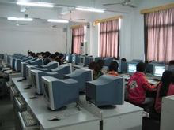

您现在的位置 : 首页 > 专业介绍
人文社科系
人文社科系是由原汕头教育学院中文、政治、历史、心理教育等四个专业学系合并组建而成。主要培养中小学教师，现有中文教育、政治教育、历史教育、心理教育等四个专业，全日制在校学生930多人，教职员工42人，教师中有副教授8人，讲师15人，助教1人，是学院规模较大的学系之一。
。。。。。。。。。。。。。。。。。。。。。。。。。。。。。。。。。。。。。。。
。。。。。。。。。。。。。。。。。。。。。。。。。。。。。。自然科学系 。。。
自然科学系由原汕头教育学院数学、物理、生化、地理四个学系合并组建而成。主要培养中小学教师，现设有数学教育、生物教育、化学教育、物理教育、地理教育、现代教育技术、生化实验技术教育、环境监测与治理专业、小学教育（数学与科学方向）等专业，现有22个教学班，全日制在校学生总数852人，是学院规模较大的学系之一。
。。。。。。。。。。。。。。。。。。。。。。。。。。。。。。。。。。。。。。。
机电工程系
机电工程系是在2002年9月后集中合各校相关专业教师组建而成的。该系同时从国内高等院校、省内工业企业引进了一批具有专业对口、知识渊博的人才。开设应用电子技术、计算机辅助设计与制造、汽车技术服务与营销、汽车检测与维修、机电一体化等四个专业，共有12个班级，全日制在校学生1000人。
。。。。。。。。。。。。。。。。。。。。。。。。。。。。。。。。。。。。。。。
。。。。。。。。。。。。。。。。。。。。。。。。。。。。。。。。计算机系。。。
计算机系组建于2002年9月，开设有计算机应用技术、计算机软件技术、计算机教育、计算机网络技术和计算机多媒体技术五个专业。全系共有25个教学班，学生总数1100人，其中师范类学生530人，非师范类学生570人。该系现有专业教师39人，其中副教授、高级讲师等副高职称以上6人，讲师、工程师16人，助教17人，教师中有硕士研究生10人，本科生29人（其中已有6位教师已读完研究生课程，另有14位中青年教师继续在职攻读硕士研究生学位）。教师中有全国优秀辅导教师1人，省优秀班主任1人，获省科技成果奖1人，省教学优质奖1人，市优秀教师1人，市先进德育工作者3人，市教育系统优秀党员、优秀党务工作者7人。
。。。。。。。。。。。。。。。。。。。。。。。。。。。。。。。。。。。。。。。
经济管理系 
经济管理系成立于2002年7月，现有国际贸易、电子商务、会计电算化、旅游管理、中文秘书、物流管理、市场营销等七个专业，全日制在校生总数1260人。该系已形成财经、管理等多学科的专业格局。
。。。。。。。。。。。。。。。。。。。。。。。。。。。。。。。。。。。。。。。
。。。。。。。。。。。。。。。。。。。。。。。。。。。。。。艺术体育系。。。。
艺术体育系是2002年在原汕头教育学院美术系、音乐系和体育专业的基础上整合组建起来的，拥有师资45名，其中高级职称教师11名，中级职称教师17名，还配备了助教、实验及教辅人员15名。开设美术、音乐、体育艺术设计四个专业，共20个班，全日制在校学生442名。
。。。。。。。。。。。。。。。。。。。。。。。。。。。。。。。。。。。。。。。
学前教育系
学前教育系（汕头幼儿师范学校）是2002年在原汕头市幼儿师范学校的基础上发展起来的。全日制在校学生总数有1289人。为适应粤东幼儿教育发展的需要，该系开设了中专层次的幼儿园教育专业、幼儿教育（美术方向）、幼儿教育（音乐方向）、幼儿教育（英语方向）专业，以及大专层次的学前教育（英语方向）专业。该系师资实力雄厚，现有教职工96人，其中高级讲师24人，讲师45人；省特级教师1人，汕头市“名教师”1人；国家级普通话测试员2人，省级普通话测试员4人，全国公共英语考级考官5人，普通高考英语（2）考官4人，省教育技能考试考官14人。